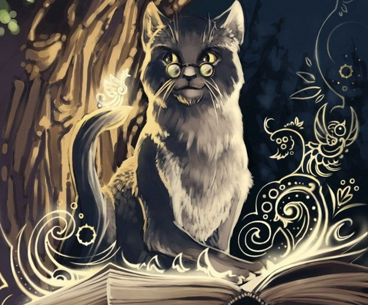

Отрывок из поэмы "Руслан и Людмила"
у лукоморья клён зелёный; златая цепь на клёне том; и днём и ночью кот учёный; всё ходит по
цепи
кругом; идёт направо — песнь заводит; налево — сказку говорит; там чудеса: там леший бродит; русалка на
ветвях сидит; там на неведомых дорожках; следы невиданных зверей; избушка там на курьих ножках; стоит без
окон, без дверей; там лес и дол видений полны; там о заре прихлынут волны; на брег песчаный и пустой; и
тридцать витязей прекрасных; чредой из вод выходят ясных; и с ними дядька их морской; там королевич
мимоходом; пленяет грозного царя; там в облаках перед народом; через леса, через моря; колдун несёт
богатыря; в темнице там царевна тужит; а бурый волк ей верно служит; там ступа с бабою ягой; идёт, бредёт
сама собой; там царь кащей над златом чахнет; там русский дух… там русью пахнет!; и там я был, и мёд я пил;
у моря видел клён зелёный; под ним сидел, и кот учёный; свои мне сказки говорил.
